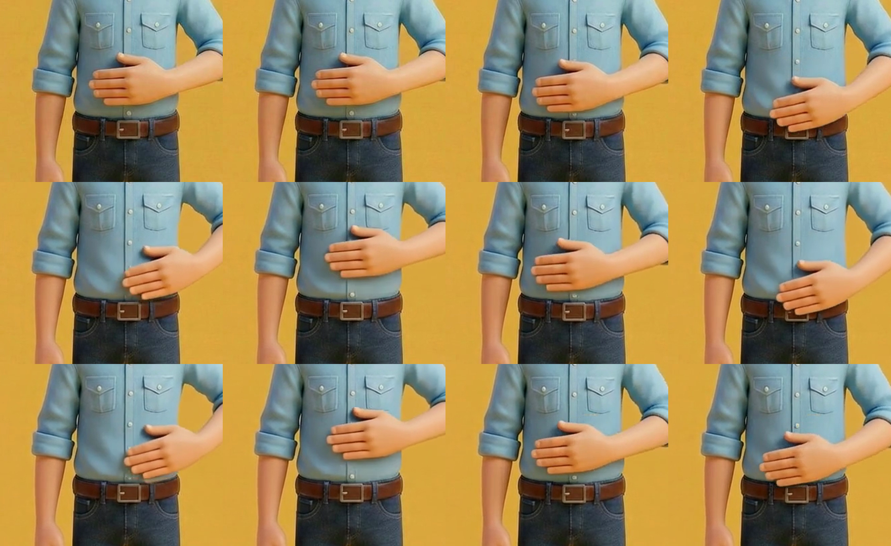
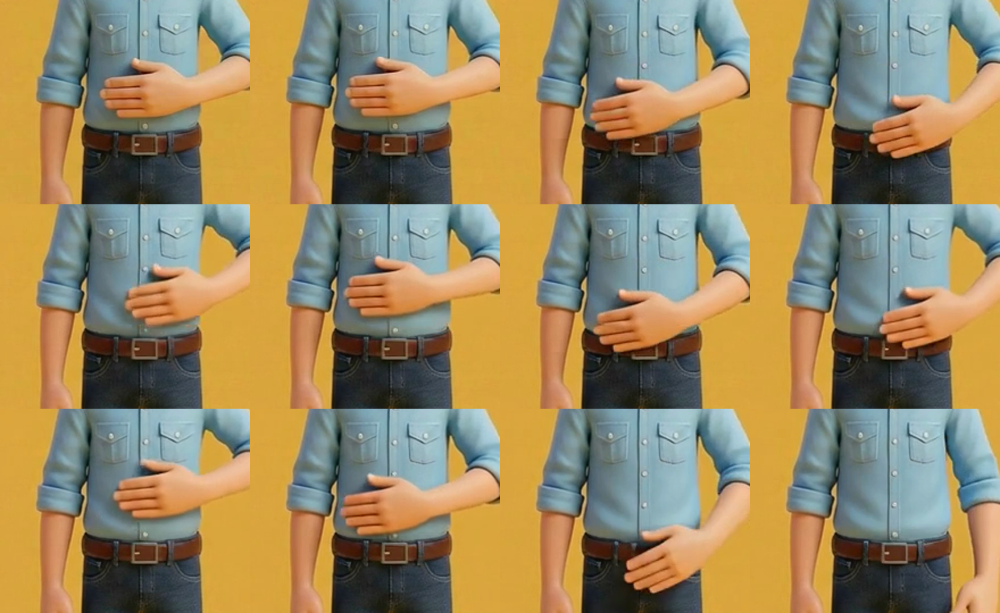
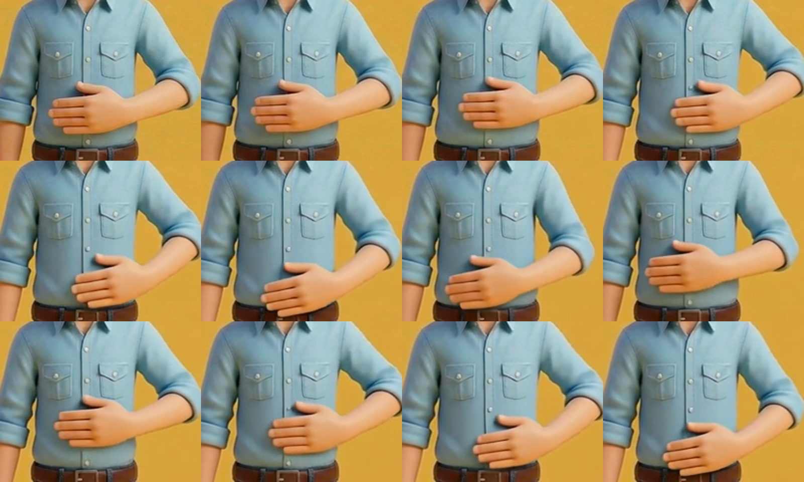

実験（フォニ丸D）。先生の確認前・採用版ではありません。
蜂谷さんの依頼による比較実験です。先生への告知はしていません。M の確定版ではありません。
PROS PHONICS / 実験 · M
M の円運動を動画AIで作れるか（実験）
はじめの絵1枚から、/m/ でおへそ周りを2周さする動きを試しました。使ったモデルは FAL の Wan 3.0 です。声・カード・Muffin・音はまだ載せていません。
関係者共有
10/29 実験
1 · 数値のまとめ
向き・周回・カメラ・費用
手の位置は MediaPipe の手のひら中心で測定
| 実験 | 設定 | 向き | 周回 | カメラ | 費用 |
|---|
| exp5（本命） | 720p・3秒・入力反転→戻す | 反時計回り | 2.13周 | ほぼ固定（顔 23.1→22.8→23.0%） | $0.30 |
| exp4 | 480p・3秒・入力反転→戻す | 反時計回り | 2.38周 | ほぼ固定（顔 23.1→22.0→22.8%） | $0.15 |
| exp3 | 480p・2秒・反転なし | 時計回り | 1.51周 | ほぼ固定（顔 22.9→22.3%） | $0.10 |
| exp1 | 480p・5秒・反転なし | 時計回り | 0.58周 | 固定 | $0.25 |
| exp2 | 480p・5秒・reference-to-video | — | — | 固定 | $0.25 |
| 合計（無効な送信2件はAPIに拒否され、動画なし） | $1.05 |
モデルはすべて FAL alibaba/wan-3.0/image-to-video（exp2 のみ reference-to-video）。1秒あたり 480p $0.05、720p $0.10。2026-10-29 に fal.ai のモデルページで確認。
2 · exp5（本命）
720p・3秒・反時計回り
入力の絵を左右反転して生成し、出力を戻しました
実験 反時計回り 2.13周。終わりは始めの姿勢に戻っています。指の分離は480pより改善。手とシャツの境目はまだにじみます。

手の確認画（4fps・12コマ）。指の間と手のひらの縁が、シャツににじむコマがあります。
3 · exp4
480p・3秒・反転して戻す
向きが逆だったので、入力の反転で直しました
実験 反時計回り 2.38周。最後に手が少し下がります（終端の指示不足）。

手の確認画（4fps・12コマ）。480p は指がまとまって見えるコマがあります。
4 · exp3
480p・2秒・反転なし
プロンプトで反時計回りを指定したが、時計回りになった回
実験 時計回り 1.51周。指示と逆。カメラ固定は守られています。

手の確認画（6fps・12コマ）。
5 · 所見
分かったこと
数値は上、ここは見立て
- 向き: プロンプトの「反時計回り」は効きませんでした。入力の絵を反転して生成し、戻すと反時計回りになりました。
- 周回: 2秒で1.5周、3秒で2.1〜2.4周。時間で調整できます。
- カメラ: 「固定・ズームなし」を入れると、ほぼ動きませんでした（顔の大きさの変化は1%以内）。
- 終わりの下がり: 「最後は始めの姿勢に戻る」を入れると戻りました。exp4 は指示不足で下がっています。
- 手の形: 手とシャツの境目がにじみます。720p で改善しますが、消えません。モデルが毎フレーム描き直すためです。
- 比較: reference-to-video（exp2）は手が横に伸びて崩れました。image-to-video の方が使えます。
6 · 記録
ファイルの確認用
差し替えの取り違え防止
exp5.mp4 sha256 bcba1dfc63bf0e7a（720p・3.0秒）exp4.mp4 sha256 94bb1ba52c5b3f39（480p・3.0秒）exp3.mp4 sha256 3e2ef027415aa9be（480p・2.0秒）- 入力: pi の
key_m_start.png。音声は入れていません。
このページは実験の記録です。先生の確認前・採用版ではありません。